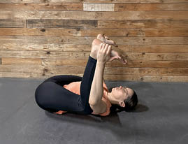

3.4.10. Pozycja szczęśliwego dziecka
Pozycja szczęśliwego dziecka (ang. happy baby pose) – rozciąga biodra, pachwiny i struktury lędźwiowego odcinka kręgosłupa (rycina V.3.15). Zmniejsza stres i napięcie, poprawia elastyczność tkanek miękkich w obrębie kończyn dolnych, pośladków, przywodzicieli stawów biodrowych. Wpływa łagodząco na dolegliwości bólowe dolnego odcinka kręgosłupa:
Rycina V.3.15.
Pozycja szczęśliwego dziecka

Fizjoprofilaktyka – prawidłowa postawa ciała
431